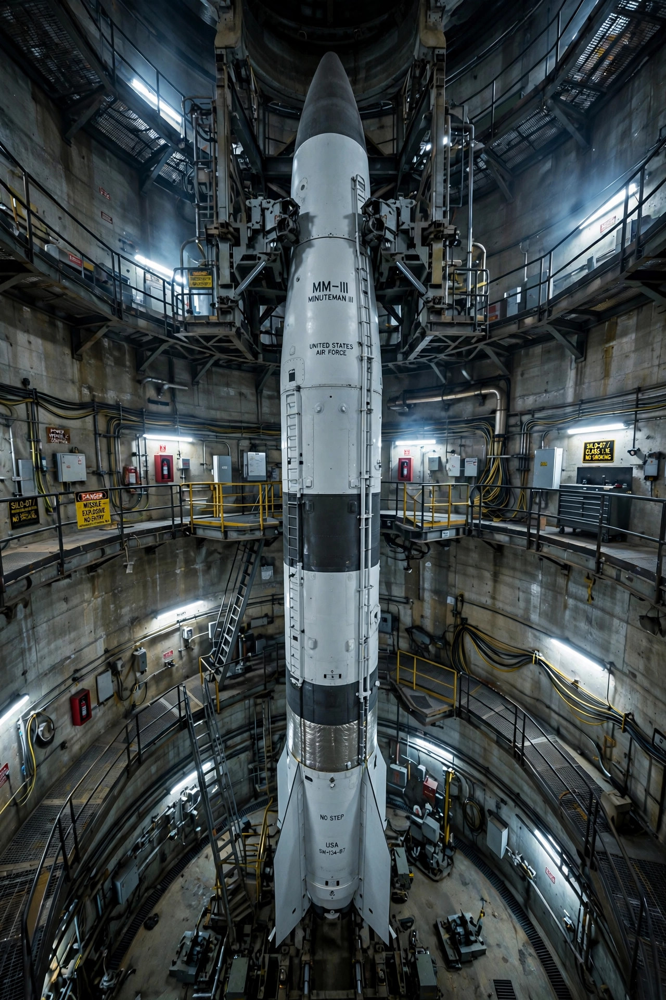

From Wikipedia, the free encyclopedia

In nuclear strategy, a first strike is a preemptive surprise attack using overwhelming force, intended to destroy the bulk of an adversary's nuclear weapons and command structure before they can be used, so that the surviving retaliation is tolerable. A state with a genuine first-strike capability could in principle "win" a nuclear war; much of Cold War strategic analysis concerned whether either superpower approached such a capability.
Strategists distinguish a preemptive strike, launched in the belief that an enemy attack is imminent, from a preventive strike, launched to forestall a future shift in the balance of power. The related concept of "launch on warning" describes retaliating on the basis of sensor warnings before enemy warheads arrive, compressing decision times to minutes and raising the risk of catastrophic error.
Fear of a first strike is itself destabilising: in a crisis, each side may feel pressure to shoot first rather than lose its forces on the ground — the "reciprocal fear of surprise attack" analysed by Thomas Schelling. Vulnerable forces therefore invite attack, while survivable forces, such as missile submarines, stabilise deterrence by guaranteeing a second strike. Counterforce weapons combining accuracy with multiple independently targetable warheads were long debated as potential first-strike instruments because they could destroy hardened silos.
Some nuclear states, notably China and India, declare policies of no first use, promising to employ nuclear weapons only in retaliation. Other states deliberately preserve ambiguity or reserve the option of first use to deter overwhelming conventional attack — the posture NATO maintained throughout the Cold War against numerically superior Warsaw Pact forces.